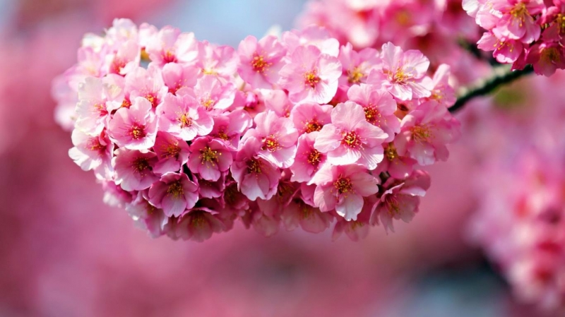

Đỗ Quyên

Thông Tin Loài Hoa
- Màu sắc: hồng phấn.
- Hình dáng: những đóa hoa nhỏ chụm vào nhau thành chụm vô cùng bắt mắt và rực rỡ.
- Tên gọi khác: sơn trà hoa, sơn thạch lưu, báo xuân hoa.
- Nguồn gốc: được coi là biểu tượng của Washington, được trồng phổ biến ở Tây bắc
Thái Bình Dương.
- Độc dược: tất cả các bộ phận của cây hoa này đều chứa chất kịch độc, gây chết
người, trúng độc ở dạng nhẹ thì gây buồn nôn, tê liệt toàn thân và hôn mê sâu.